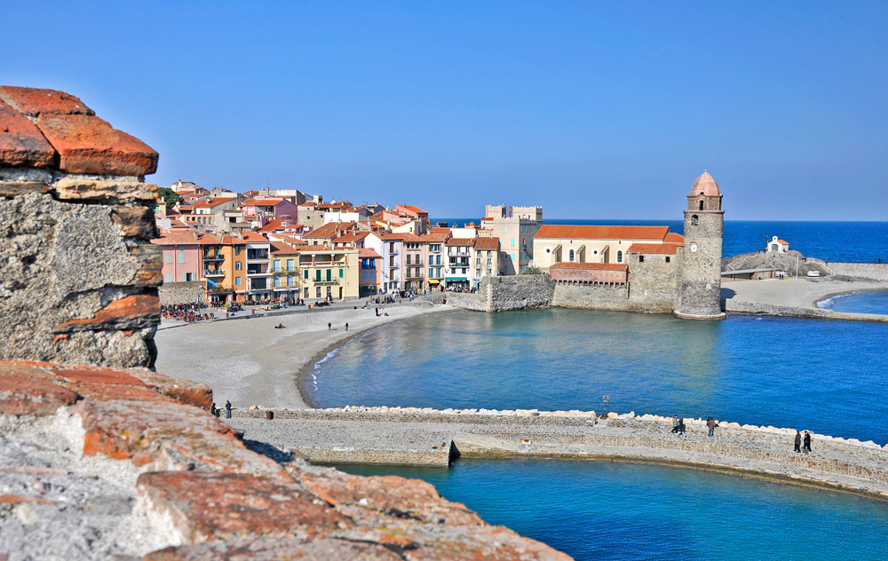
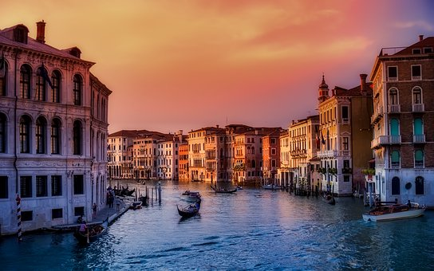
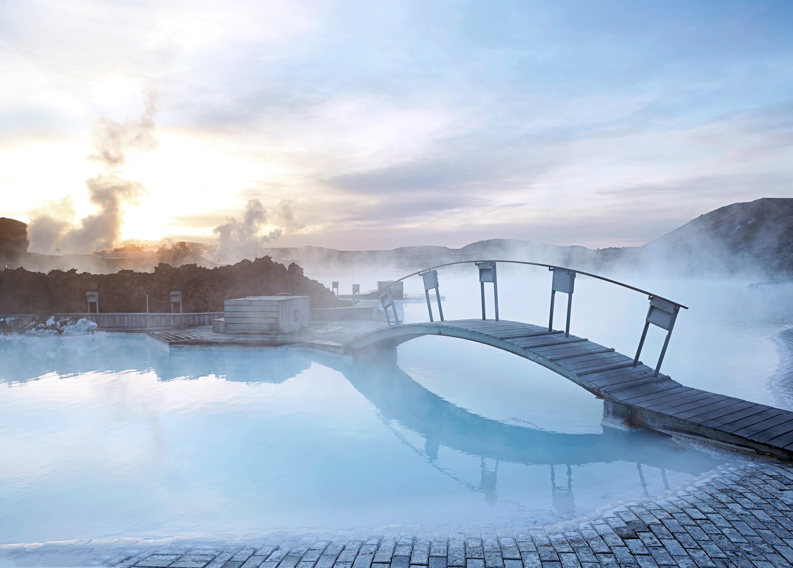

I have been to France many times, specifically Carcassonne. I usually stay in Camping La Sirene. This is a lovely campsite and offers a range of activites such as canyoning, scuba diving and kayaking. There's also beautiful scenery and structures such as Château Royal de Collioure and Carcasonne Castle.

I went to Italy twice also, I went to Venice, Rome and Sorrento. Of the 3 beautiful locations it's difficult to decide on a favourite however mine is pictured to the left, Venice. It's a completely unique city unlike anywhere I've ever been and anywhere else I'm likely to be.

I'm going to Ios in Greece this Summer as my immediate travelling plan. However sometime in the future, probably distant, I would love to go to Iceland, Amsterdam, Egypt and Munich to Oktoberfest.